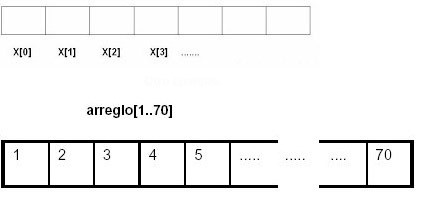
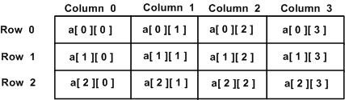

Un arreglo es un conjunto de datos o una estructura de datos homogéneos que se encuentran ubicados en forma consecutiva en la memoria RAM (sirve para
almacenar datos en forma temporal).
Un arreglo puede definirse como un grupo o una colección finita, homogénea y ordenada de elementos. Los arreglos pueden ser de los siguientes tipos:
 Es un tipo de datos estructurado que está formado de una colección finita y ordenada de datos del mismo tipo. Es la estructura natural para modelar listas de elementos iguales. Están formados por un conjunto de elementos de un mismo tipo de datos que se almacenan bajo un mismo nombre, y se diferencian por la posición que tiene cada elemento dentro del arreglo de datos. Al declarar un arreglo, se debe inicializar sus elementos antes de utilizarlos. Para declarar un arreglo tiene que indicar su tipo, un nombre único y la cantidad de elementos que va a contener.

Es un tipo de dato estructurado, que está compuesto por dimensiones. Para hacer referencia a cada componente del arreglo es necesario utilizar n
índices, uno para cada dimensión. El término dimensión representa el número de índices utilizados para referirse a un elemento particular en el
arreglo. Los arreglos de más de una dimensión se llaman arreglos multidimensionales.
Las operaciones en arreglos pueden clasificarse de la siguiente forma: